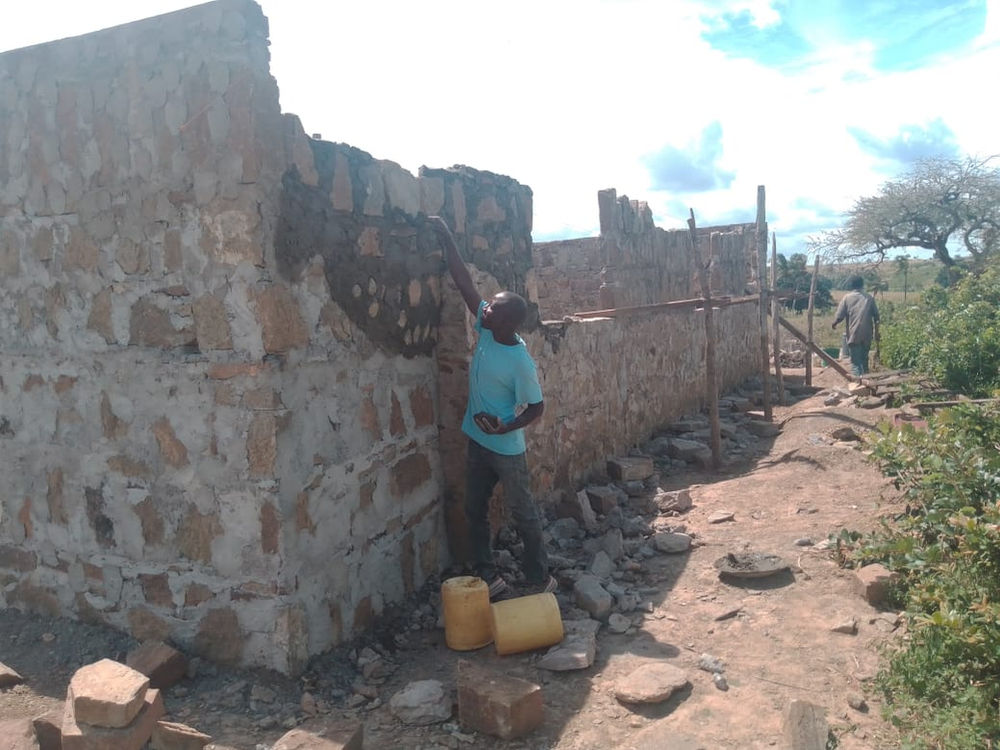
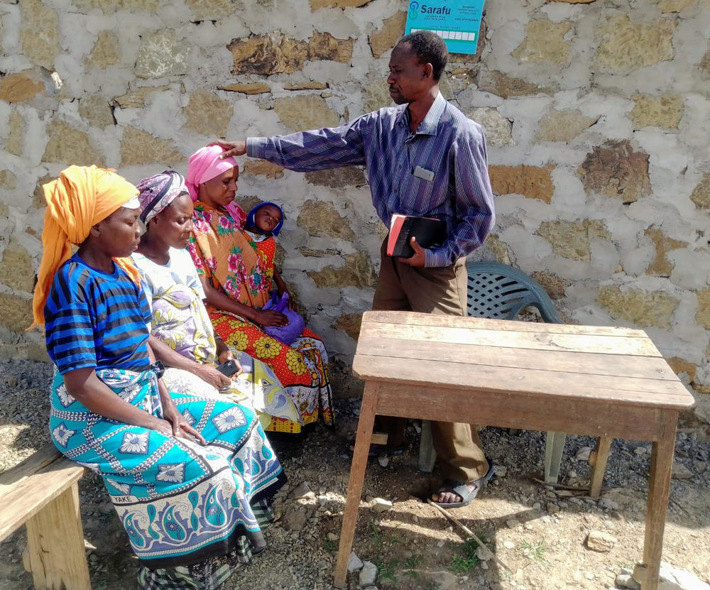

One Church building a Value driven Economy

Samson Dzeha Nyanje was born 1972. He is a pastor at Apostolic Ministry of Kenya and has been supporting his community since 1999 in Mkanyeni, Kwale at the age of 27 years.
Dzeha learned about CICs (locally called Sarafu) two years ago from Nadzua Mwero, a leader in a nearby Women’s Group. By introducing CICs his congregation has been able to continue offering tithing when they have no national currency and in return he has been able to purchase goods and services from his congregation to help the needy in his community get food. His first Sunday after introduction, Pastor Dzeha collected 250 CC and 100 ksh as offering, almost twice the typical offerings. Offerings have grown over time and he now has enough to support pastors under his supervision and get his basic needs met for his community. Since more people feel they have something to offer with CICs, the congregation has over doubled to 84 members, 35 adults and 49 children.
The pastor is currently paying workers to renovate the church using CICs and he is also saving part of his CICs in a local group (chama). Dzeha also managed to get a loan from his savings groups both in CICs and Kenya shillings and he has been able to start a small cereal shop. Dzeha buys the cereals locally from other farmers and he is able to sell to his congregation after church.
The past
By redistributing CICs to those in need the church now feeds over 100 different families in a month using CICs. Dzeha also mentioned that before CICs, people used to eat only one meal a day and it was mostly beans (since majority are farmers and they plant beans and maize) however now they can afford to buy rice for their families using CIC.
Dezha states that “Sarafu has taught people the power of circular trade and sharing and they will never go back to how they were before always struggling to get cash. We will continue eating three meals a day since we learnt how to help each other rather than fight each other for money.”
He quotes “ If it were not for Sarafu, I would not be where I am. Sarafu has expanded my horizons. I am now a business owner and also offering services in my community using it. This was a dream back in 2018. I am able to save the national currency and I can now comfortably educate all my children” “Our church can now better support the community even when there are no Kenyan shillings due to poor markets and crisis.“
Dzeha’s church is a pillar of support representing the majority of CIC trade in the community. In just the last month during the COVID crisis the church has:
- Received 97,303 CICs in 252 transactions from 181 people,
- Spent 126,638 CIC in 248 transactions to 42 people. This represents as much as 6000 individual meals in a community!